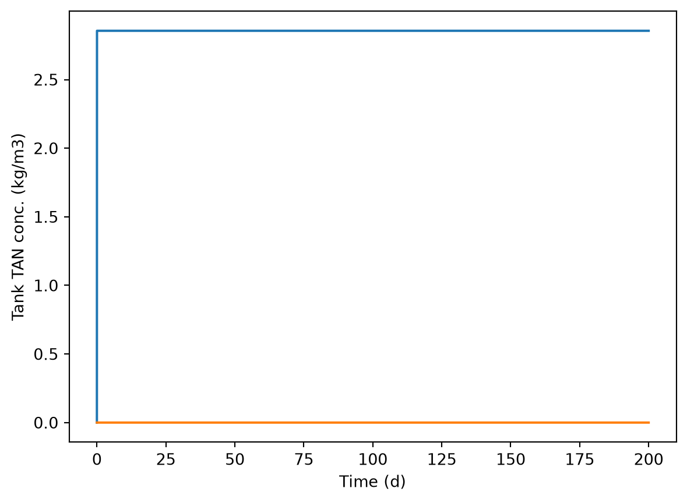
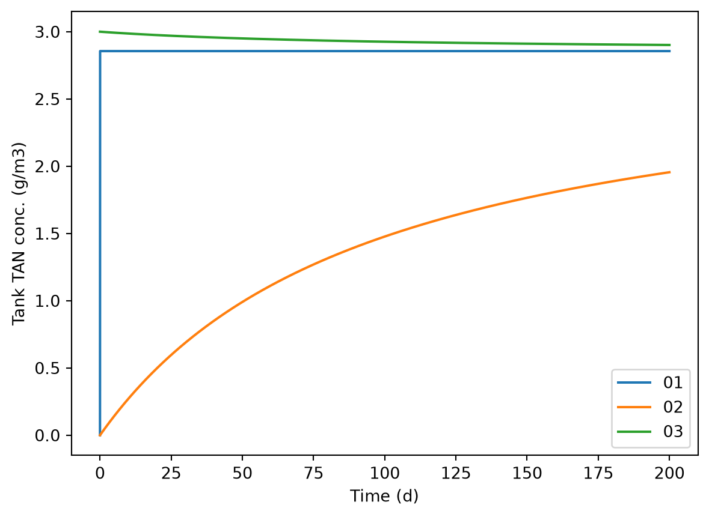
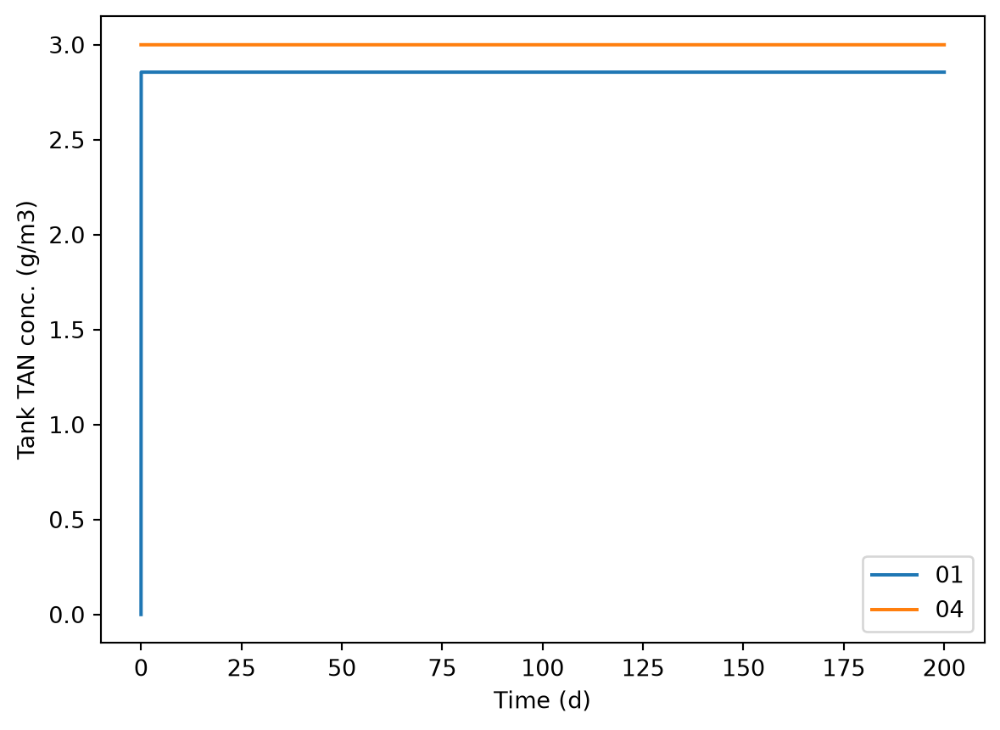
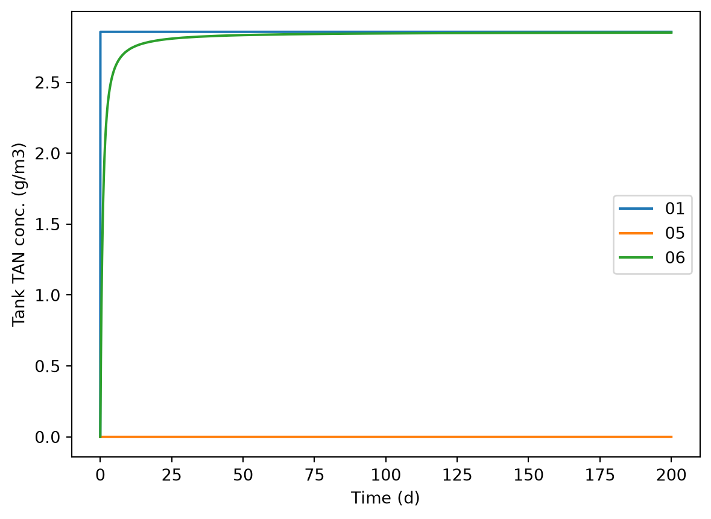
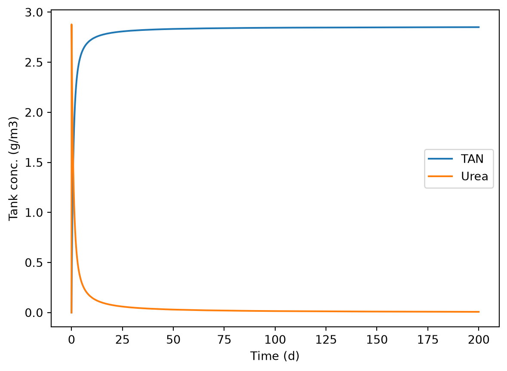
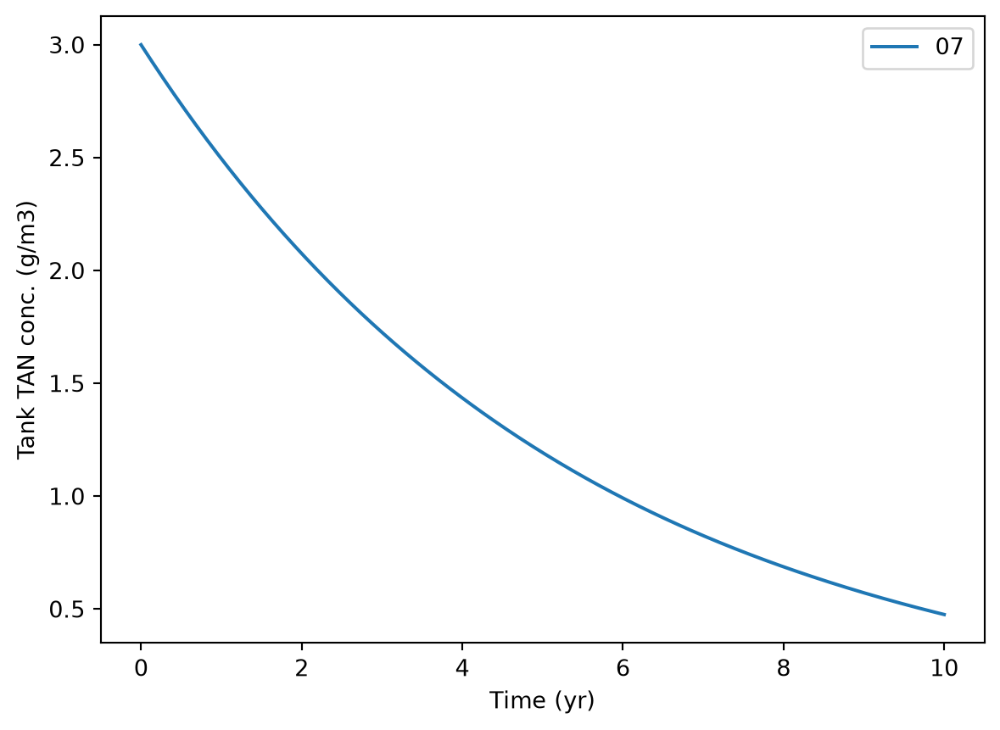
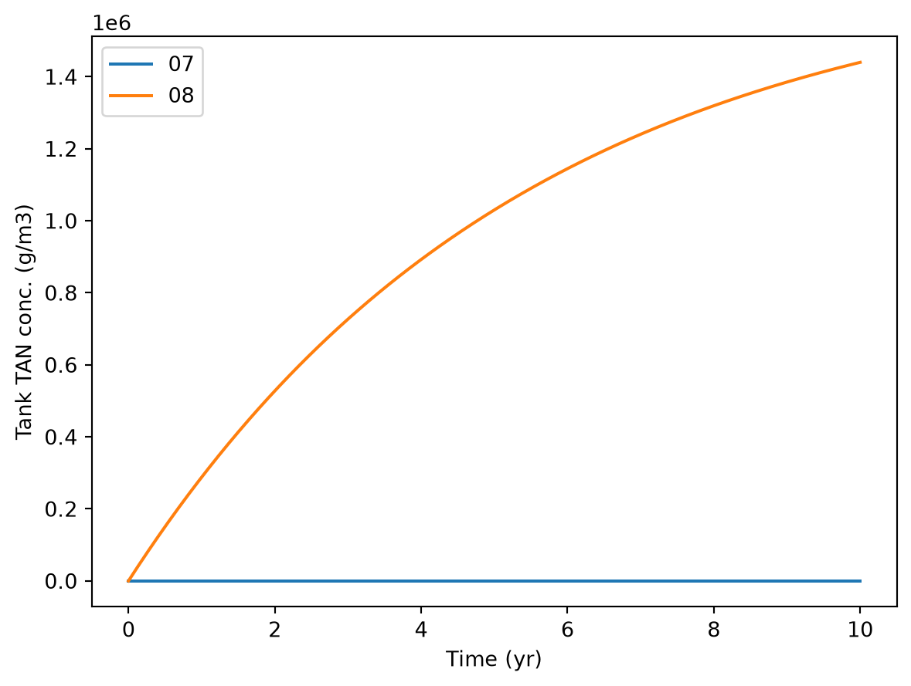
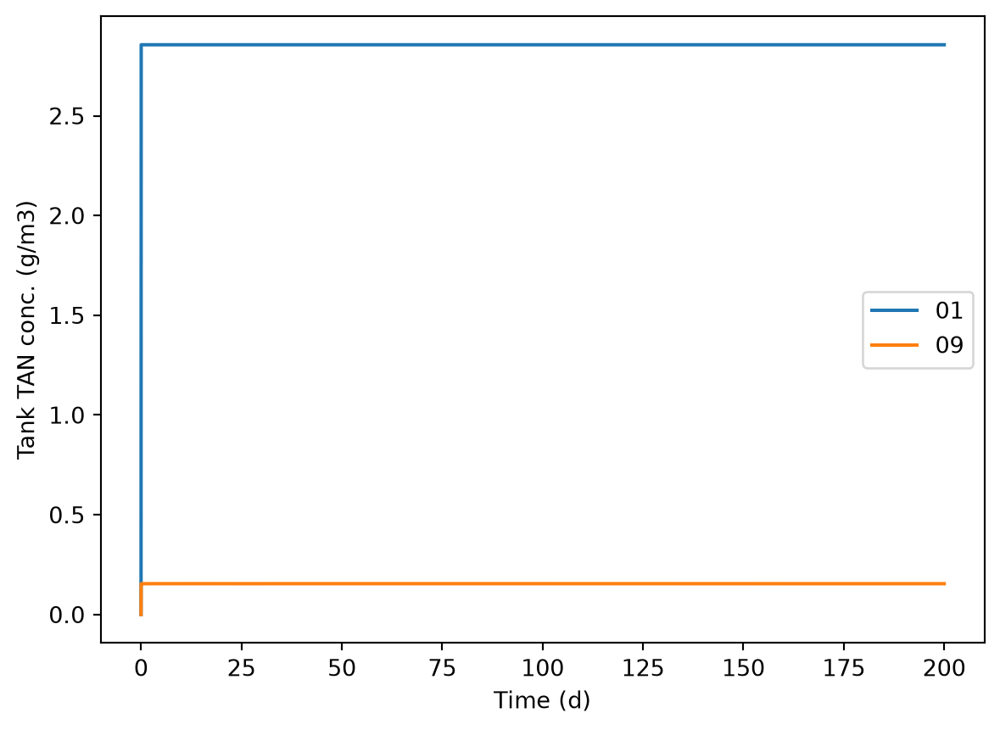

dm_TAN_dt = TAN_in + urea_hyd - volatVerification solution
Check of the code
First, let’s try to check the governing equation (GE) we came up with in the model formulation.
\[ \frac{dTAN}{dt} = c{TAN,in} \cdot \dot{V} + k_u \cdot m_u - K_G \cdot (\frac{c_l}{H} - c_g) \cdot A. \]
But the Python code has intermediate variables, so the GE shows up like this:
So it is good to either 1) compare it to the conservation equation or 2) identify the parts of the GE that correspond to the individual variables in the code. Either way, all the expressions in the code need to be checked, so it is important to work backwards.
Compare to the mini-project solution. The conservation equation for TAN looks like this:
rate of accumulation = rate of addition in slurry + rate of urea hydrolysis - rate of volatilizationwith all terms as rate of change in N mass, i.e., \(\text{kg} ~ \text{s}^{-1}\).
Do the two match? Check for terms and the signs. These look the same.
and for urea, the Python model has:
dc_urea_dt = urea_inAnd the mathematical model:
\[ \frac{du}{dt} = c{u,in} \cdot \dot{V} - k_u \cdot m_u. \]
We are missing urea hydrolysis in the model code! That is a big problem.
In verification, this type of checking should be done for all variables.
Let’s work backwards and see how the individual terms are calculated. This effectively means getting into the constitutive equations. Here are the expressions for calculating individual terms in the conservation equation from line 100+ in the code:
# TAN flow in and out by advection ()
TAN_in = c_TAN_in * f_in
# Urea flow in and out by advection ()
urea_in = c_urea_in * f_in
# Urea hydrolysis rate ()
urea_hyd = ku * m_urea
# NH3 volatilization ()
volat = kg * a_top * (frac_NH3 * m_TAN / v_man / hen)These should be compared to the equations in the mathematical model. For volatilization rate, see section 3 or 6 in the mini-project solutions.
The volatilization rate calculation is wrong–it is missing the background concentration.
As part of verification it is helpful to add unit checks in comments. This can go in a notes file or even right in the source code, i.e., the module here. They don’t need to stay in the code, although it is fine to keep them.
# kg/m3 * m3/s -> kg/s
TAN_in = c_TAN_in * f_in
# 1/s * kg -> kg/s
urea_hyd = ku * m_urea
# m/s * m^2 * ( . kg / m3 / . )
# m/s * m^2 * (kg/m3) ------------------------> kg/m3-s
volat = kg * a_top * (frac_NH3 * m_TAN / v_man / hen)I don’t see any unit problems.
We could also do a conceptual check of these expressions. It is probably a good idea to do the conceptual check before checking units. Similar to the units check above, I’ll copy in the code and use comments to document a check. For just a couple.
# mass flow =? concentration * flow rate OK
TAN_in = c_TAN_in * f_in
# Volatilization =? MTC * area * concentration OK
# gas MTC aq. conc. / aq:g HLC -> gas OK
volat = kg * a_top * (frac_NH3 * m_TAN / v_man / hen)That Henry’s law topic can be tricky. First, this is interphase mass transfer, which is just difficult to understand. Second, Henry’s law constant is anything but constant! Yes, it changes with temperature and more, and of course varies between different compounds. But I mean even for the exact same compound and temperature it can be expressed with different dimensions and units, for use in different ways. So it is just a hassle to work with. I have use a dimensionless form in the model. And I wrote in the hlc() function docstring that it is aq:g, which means it gives the equilibrium ratio of dissolved to gas concentration in the same volumetric units. Some people prefer to use the inverse of this form, or a g:aq ratio. And they may just describe it as “dimensionless”, which accurately describes the form we used as well. See why Henry’s law constant is so confusing?
Anyway, in our model, the calculated value of around 2300 means the concentration of the “free ammonia” species NH3 (aq) is 2300 times the equilibrium gas phase concentration when both are in g/m3 or similar units (mg/L, mol/m3, mmol/m3, etc., but not g/kg or ppm (which means different things for gas and solutions!)). So although hen is dimensionless, we should hang onto that aq:g tag.
Here is the code with all the corrections (look for Note:, which should show up in red):
slurry_mod.py
"""
File: slurry_mod.py
Author: Sasha D. Hafner and Frederik Dalby
Course: Modelling 2026
Description:
This module defines a model function stmod() for
modeling ammonia volatilization from a slurry
storage tank. This version had deliberate errors
and omissions for use in verification practice.
But these have been corrected, and corrections
noted in comments below.
"""
from scipy.integrate import solve_ivp
import numpy as np
def stmod(
f_in,
a_top,
c_TAN_in,
c_urea_in,
c_bg,
pH,
ku,
kg,
temp_c,
t_range,
t_step,
m_TAN_0 = 0.,
m_urea_0 = 0.,
v_man_0 = 1.e-6
):
"""
Dynamic model for ammonia volatilization from a manure storage
tank with constant but possibly unequal manure flow in and out
and a variable volume of manure. Includes urea hydrolysis.
Parameters
----------
f_in : float
Rate of manure pumping into tank (m3/s)
a_top : float
Area of tank (top and at any depth) (m2).
c_TAN_in : float
Concentration of TAN in fresh manue (kg/m3 as N).
c_urea_in : float
Concentration of urea in fresh manue (kg/m3 as N).
c_bg : float
Concentration of NH3 (g, gaseous) in ambient (background)
air (kg/m3 as N).
pH : float
Manure pH (pH units).
ku : float
First-order reaction rate constant for urea hydrolysis (1/s).
kg : float
Overall gas-phase mass transfer coefficient (m/s).
temp_c : float
Slurry temperature (deg. C) for speciation calculations.
t_range : tuple, list, or array (length 2)
Initial and final time requested in output (s).
t_step : float
Time step requested for output (s).
m_TAN_0 : float
Initial mass of TAN in tank (kg). NOTE: Added, was missing.
m_urea_0 : float
Initial mass of urea in tank (kg). NOTE: Added, was missing.
v_man_0 : float
Initial volume of slurry in tank (m3). NOTE: Added, was missing.
"""
# Calculate Henry's law constant based on temperature (dimensionless, aq:g)
hen = hlc(temp_c)
# Calculate fraction of TAN as NH3(aq) (dimensionless)
frac_NH3 = free_NH3(pH, temp_c)
# Define rates function
def rates(t, y):
# Extract state variable values
m_TAN = y[0] # (kg N)
m_urea = y[1] # (kg N)
v_man = y[2] # (m3)
# TAN flow in and out by advection (kg N / s) NOTE: Units added
TAN_in = c_TAN_in * f_in
# Urea flow in and out by advection (kg N / s) NOTE: Units added
urea_in = c_urea_in * f_in # NOTE: Incorrect constant (unit error?) removed
# Urea hydrolysis rate (kg N / s) NOTE: Units added
urea_hyd = ku * m_urea
# NH3 volatilization (kg N / s) NOTE: Units added
volat = kg * a_top * (frac_NH3 * m_TAN / v_man / hen - c_bg) # NOTE: - c_bg added
# Calculate derivatives using GE from model formulation
# (All in kg N / s)
dm_TAN_dt = TAN_in + urea_hyd - volat
dm_urea_dt = urea_in - urea_hyd # NOTE: - urea_hyd added
dv_man_dt = f_in
return np.array([dm_TAN_dt, dm_urea_dt, dv_man_dt])
# Now solve with solve_ivp()
res = solve_ivp(rates, t_span = t_range, y0 = [m_TAN_0, m_urea_0, v_man_0],
t_eval = np.arange(t_range[0], t_range[1] + t_step, t_step))
# That gives us masses of the three state variables (kg N for all but slurry volume, which is m3)
# Let's calculate concentrations too by dividing the two solute mass elements (TAN and urea) by the slurry element
concs = res.y[0:2, ] / res.y[2, ]
out = {
't': res.t,
'v_man': res.y[2, :],
'm_TAN': res.y[0, :],
'm_urea': res.y[1, :],
'c_TAN': concs[0, :],
'c_urea': concs[1, :]
}
# Return results
return(out)
def free_NH3(pH, temp_c):
"""
Calculate free ammonia fraction (NH3 (aq)) from pH and TAN concentration.
Parameters
----------
pH : float or array-like
Solution pH
temp : float or array-like
Temperature in degrees C
Returns
-------
float or array with free ammonia as fraction of TAN. NOTE: Corrected description.
"""
# Calculate H+ concentration (mol/L) from pH
c_H = 10**(-pH)
# And Ka
Ka = 10**-(0.0905 + 2729.31 / (temp_c + 273.15))
# Apply equation from text
f_NH3 = 1 / (1 + c_H / Ka)
# Return solution
return f_NH3
def hlc(temp_c):
"""
Caclulate Henry's law constant for NH3 from temperature
Parameters
----------
temp_c : float
Temperature in deg. C
Returns
-------
float with dimensionless Henry's law constant (aq:g)
"""
# 1. temp_c is input temperature in degrees C but the calculations are based on Kelvin
temp_k = temp_c + 273.15
# 2. Universal gas constant (atm L/mol-K)
R = 0.082057
# 3. Henry's law constant in mol / L - atm
kh = 10**(-3.51645 - 0.0013637 * temp_k + 1701.35 / temp_k)
# 4. Henry's law constant in dimensionless form aq:g (e.g., g/m3 aq. per g/m3 gas, g/L per g/L, etc.)
hen = R * temp_k * kh
return(hen)
Model call verification
Here we’ll 1) play around with the model a bit to understand how it works and if the general patterns follow expectations, or understanding of our conceptual model, and 2) try some limiting or edge cases to check model behavior for a kind of verification. For the second part, it is a good idea to check the response to all inputs, but we won’t do that here.
Import packages.
import numpy as np
import matplotlib.pyplot as plt
from importlib import reload
import slurry_mod as smTo load new version after edits:
reload(sm)<module 'slurry_mod' from '/home/sasha/repos/course-modelling-2026/classes/19-02-nov-verification/solutions/slurry_mod.py'>Reference inputs. We’ll use some of these repeatedly. Say we have 200 cows, each producing around 80 kg of slurry per day.
f_in = 200 * 80 / 1000 / 86400For the tank area, let’s assume a 4 m deep tank still needs to hold 200 days’ worth of manure.
depth = 4.
a_top = f_in * 200 * 86400 / depth
a_top800.0What does this imply for a tank diameter, assuming a cylindrical tank?
2 * np.sqrt(a_top / np.pi) np.float64(31.915382432114615)32 m is plausible.
Let’s set the other inputs.
kg = 0.01 # m/s
c_bg = 0. # g/m3
pH = 7. # pH
c_TAN_in = 3 # g/m3
c_urea_in = 0 # g/m3
ku = 0. # 1/d
temp_c = 15. # deg. CFinally, let’s run the model for a few initial scenarios, checking that effects of input values match our expectations and understanding of the conceptual and mathematical model. We have assumed the tank should be emptied after no more than 200 days, so we’ll run it that long.
pred_01 = sm.stmod(f_in=f_in,
a_top=a_top,
c_TAN_in=c_TAN_in,
c_urea_in=c_urea_in,
c_bg=c_bg,
pH=pH,
ku=ku,
kg=kg,
temp_c=temp_c,
t_range=[0, 200 * 86400],
t_step=3600)plt.plot(pred_01['t'] / 86400, pred_01['c_TAN'], label = 'TAN')
plt.plot(pred_01['t'] / 86400, pred_01['c_urea'], label = 'Urea')
plt.xlabel('Time (d)')
plt.ylabel('Tank TAN conc. (kg/m3)')
We see a very rapid attainment of what seems to be a steady-state TAN concentration. This behavior is explained in the mini-project solution. The TAN concentration responds very quickly at first because the depth of slurry is so small, while volatilization responds to the exposed surface area, which is fixed. No urea here, because of the input setting.
Scenario 2: Start with a couple m of slurry in tank. Here we do not expect rapid steady state.
pred_02 = sm.stmod(f_in=f_in,
a_top=a_top,
c_TAN_in=c_TAN_in,
c_urea_in=c_urea_in,
c_bg=c_bg,
pH=pH,
ku=ku,
kg=kg,
temp_c=temp_c,
v_man_0=a_top * 2,
t_range=[0, 200 * 86400],
t_step=3600)Scenario 3: Add some TAN to that initial slurry.
pred_03 = sm.stmod(f_in=f_in,
a_top=a_top,
c_TAN_in=c_TAN_in,
c_urea_in=c_urea_in,
c_bg=c_bg,
pH=pH,
ku=ku,
kg=kg,
temp_c=temp_c,
v_man_0=a_top * 2,
m_TAN_0=c_TAN_in * a_top * 2,
t_range=[0, 200 * 86400],
t_step=3600)Let’s plot these three.
plt.plot(pred_01['t'] / 86400, pred_01['c_TAN'], label = '01')
plt.plot(pred_02['t'] / 86400, pred_02['c_TAN'], label = '02')
plt.plot(pred_03['t'] / 86400, pred_03['c_TAN'], label = '03')
plt.legend()
plt.xlabel('Time (d)')
plt.ylabel('Tank TAN conc. (g/m3)')
So, the model predicts that the TAN concentration in the storage tank increases or decreases, depending on the starting concentration, and tends toward a steady-state value, of course below the initial concentration (at least when we have left out urea, based on the assumption that all urea is converted to TAN quickly, prior to transfer to the tank). With slurry and TAN always coming into the tank, it is not clear if we will ever actually reach a steady state concentration. If we start with the c_TAN_in concentration in the tank, as volatilization removes TAN the rate of volatilization drops. So we have a kind of negative feedback, which is very common in mass transfer models–here removal of TAN by NH3 volatilization reduces the rate of volatilization.
Now let’s look at some limiting cases. Scenario 4: zero exposed area, but with initial TAN concentration set to the incoming TAN concentration for clarity.
pred_04 = sm.stmod(f_in=f_in,
a_top=0.,
c_TAN_in=c_TAN_in,
c_urea_in=c_urea_in,
c_bg=c_bg,
pH=pH,
ku=ku,
kg=kg,
temp_c=temp_c,
v_man_0=a_top * 2,
m_TAN_0=c_TAN_in * a_top * 2,
t_range=[0, 200 * 86400],
t_step=3600)plt.plot(pred_01['t'] / 86400, pred_01['c_TAN'], label = '01')
plt.plot(pred_04['t'] / 86400, pred_04['c_TAN'], label = '04')
plt.legend()
plt.xlabel('Time (d)')
plt.ylabel('Tank TAN conc. (g/m3)')
That makes sense. With zero exposed area there is no TAN loss.
Scenario 5: All incoming N as urea, no initial TAN. We will go back to the nearly zero initial slurry volume, because it is easier to interpret output when we see a steady-state concentration.
pred_05 = sm.stmod(f_in=f_in,
a_top=a_top,
c_TAN_in=0.,
c_urea_in=3.,
c_bg=c_bg,
pH=pH,
ku=ku,
kg=kg,
temp_c=temp_c,
v_man_0=1.e-6,
t_range=[0, 200 * 86400],
t_step=3600)Scenario 6: The same as 5 but with some urea hydrolysis!
pred_06 = sm.stmod(f_in=f_in,
a_top=a_top,
c_TAN_in=0.,
c_urea_in=3.,
c_bg=c_bg,
pH=pH,
ku=2/86400,
kg=kg,
temp_c=temp_c,
v_man_0=1.e-6,
t_range=[0, 200 * 86400],
t_step=3600)plt.plot(pred_01['t'] / 86400, pred_01['c_TAN'], label = '01')
plt.plot(pred_05['t'] / 86400, pred_05['c_TAN'], label = '05')
plt.plot(pred_06['t'] / 86400, pred_06['c_TAN'], label = '06')
plt.legend()
plt.xlabel('Time (d)')
plt.ylabel('Tank TAN conc. (g/m3)')
plt.plot(pred_06['t'] / 86400, pred_06['c_TAN'], label = 'TAN')
plt.plot(pred_06['t'] / 86400, pred_06['c_urea'], label = 'Urea')
plt.legend()
plt.xlabel('Time (d)')
plt.ylabel('Tank conc. (g/m3)')
Scenario 7: No flow (batch), but with initial volume. And some TAN, so we can look for the expected decrease. We’ll run the model for a longer time this time.
pred_07 = sm.stmod(f_in=0.,
a_top=a_top,
c_TAN_in=c_TAN_in,
c_urea_in=c_urea_in,
c_bg=c_bg,
pH=pH,
ku=ku,
kg=kg,
temp_c=temp_c,
v_man_0=a_top * 2,
m_TAN_0=c_TAN_in * a_top * 2,
t_range=[0, 10 * 86400 * 365],
t_step=86400 * 10)plt.plot(pred_07['t'] / 86400 / 365, pred_07['c_TAN'], label = '07')
plt.legend()
plt.xlabel('Time (yr)')
plt.ylabel('Tank TAN conc. (g/m3)')
We should expect a continual reduction in TAN concentration. What would happen if we set the background to something above 0?
pred_08 = sm.stmod(f_in=0.,
a_top=a_top,
c_TAN_in=c_TAN_in,
c_urea_in=c_urea_in,
c_bg=2.,
pH=pH,
ku=ku,
kg=kg,
temp_c=temp_c,
v_man_0=a_top * 2,
m_TAN_0=c_TAN_in * a_top * 2,
t_range=[0, 10 * 86400 * 365],
t_step=86400 * 10)plt.plot(pred_07['t'] / 86400 / 365, pred_07['c_TAN'], label = '07')
plt.plot(pred_08['t'] / 86400 / 365, pred_08['c_TAN'], label = '08')
plt.legend()
plt.xlabel('Time (yr)')
plt.ylabel('Tank TAN conc. (g/m3)')
Scenario 9: Very high pH.
pred_09 = sm.stmod(f_in=f_in,
a_top=a_top,
c_TAN_in=c_TAN_in,
c_urea_in=c_urea_in,
c_bg=c_bg,
pH=12,
ku=ku,
kg=kg,
temp_c=temp_c,
t_range=[0, 200 * 86400],
t_step=3600)plt.plot(pred_01['t'] / 86400, pred_01['c_TAN'], label = '01')
plt.plot(pred_09['t'] / 86400, pred_09['c_TAN'], label = '09')
plt.legend()
plt.xlabel('Time (d)')
plt.ylabel('Tank TAN conc. (g/m3)')
We should expect more ammonia loss, and that is what we see.